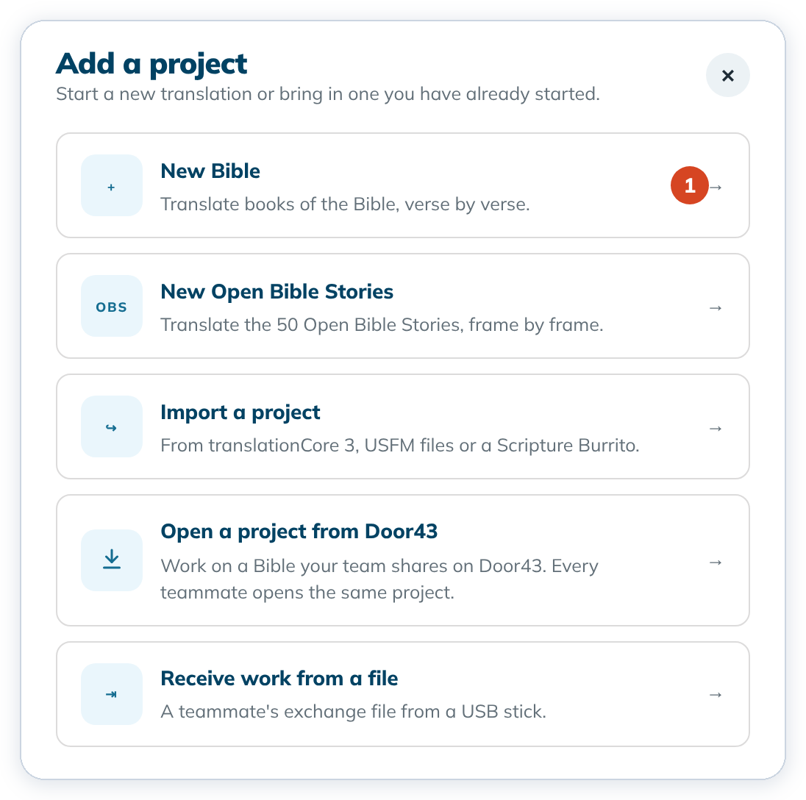
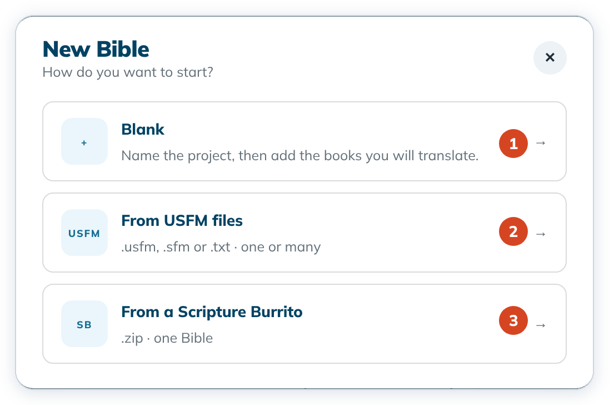
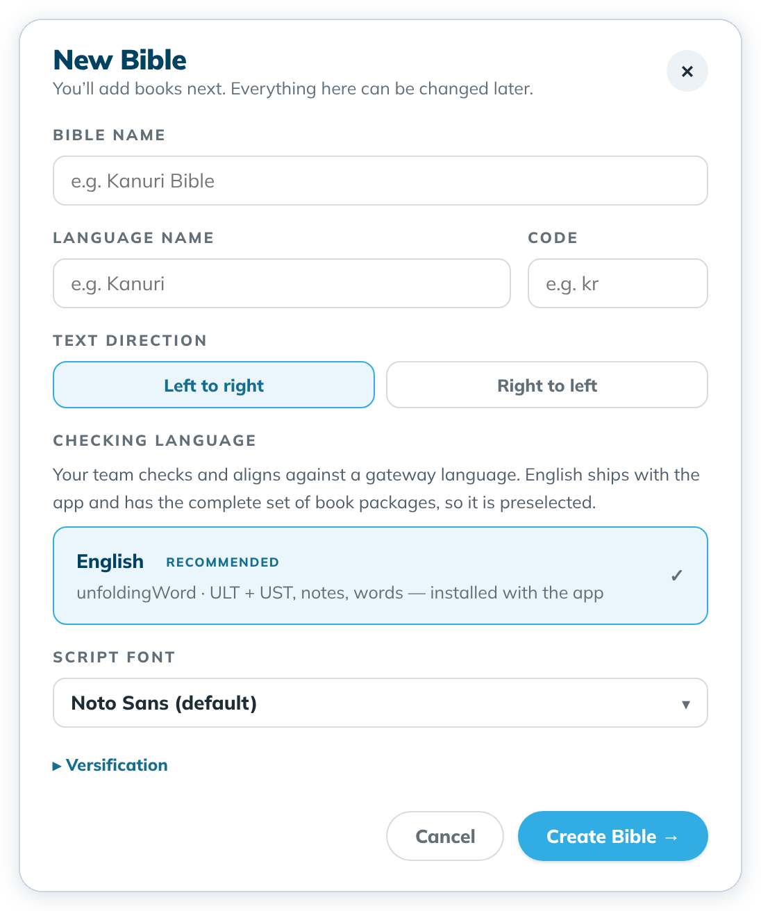
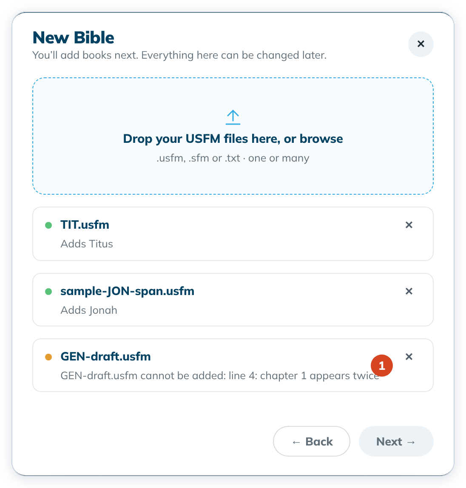
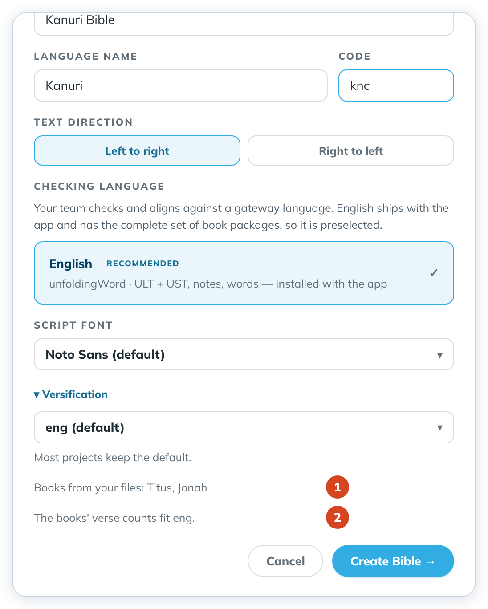
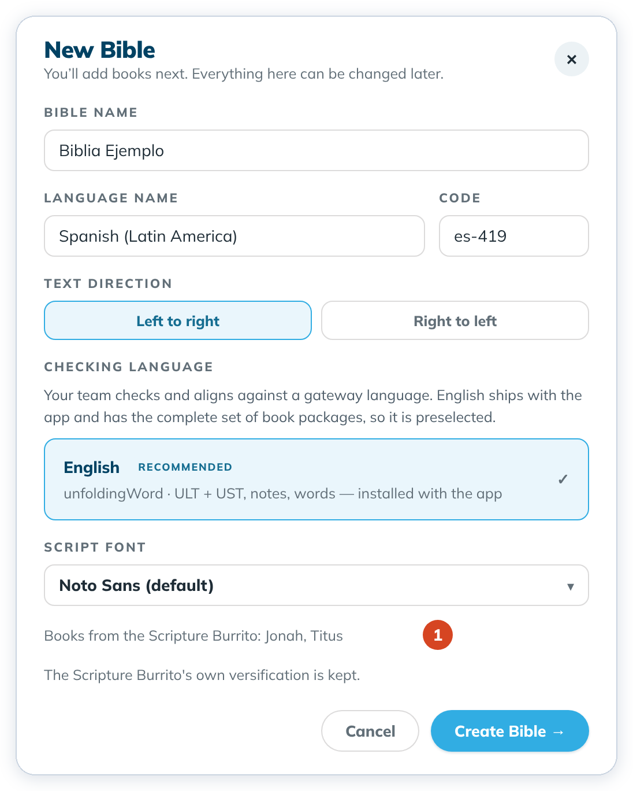

Create a Bible project
Start a new Bible translation project: blank, from USFM files, or from a Scripture Burrito. You add books right after.
"You'll add books next. Everything here can be changed later."
Steps
- On Home, click + Add a project, then New Bible (1).


- New Bible asks How do you want to start? Choose Blank (1), From USFM files (2) or From a Scripture Burrito (3).


Start a blank Bible
- Click Blank.
- Type a Bible name, for example
Kanuri Bible. - Type the Language name. When a matching language appears in the list, choose it so Code fills in (for example
French (fr)→fr). You can still type the code yourself. - Choose Left to right or Right to left.
- Leave Checking language on English. It comes with the app, so you don't need to download anything.


- Click Create Bible →. The Add a book dialog opens. Continue with Add a book.
Start from USFM files
Use this when your translation is already in USFM files, one book per file. Each file becomes a book of the new project, with the file's text as its draft.
- Click From USFM files.
- Drop your files on Drop your USFM files here, or browse, or click it to choose them. Each file gets a row. A green dot says which book it adds, for example Adds Titus.
- An orange dot means the file can't be used, and the row says why and on which line (1). Remove that file with its ✕, fix it, and add it again.


- When every row is a book, click Next →.
- Fill in the Bible name, language, code and direction as for a blank Bible. Under the form, Books from your files lists the books (1), and a note says which Versification the books' verse counts fit (2). Most projects keep it.


- Click Create Bible →. The project is made with all its books in one step, and Add a book opens in case you want more.
Start from a Scripture Burrito
Use this for a Bible translation another tool saved as a Scripture Burrito .zip.
- Click From a Scripture Burrito, then drop the
.zipon Drop your Scripture Burrito here, or browse, or click it to choose it. - The form fills in from the Burrito: the name, language and code. Change them if you need to. Books from the Scripture Burrito lists its books (1). A Burrito with its own versification keeps it, and the form says The Scripture Burrito's own versification is kept.


- Click Create Bible →. The books and any other files of the Burrito come into the new project, and Add a book opens.
To cancel at any step, click Cancel, ← Back or the ✕. Nothing is saved.
Good to know
- The name needs at least one plain letter or digit, because it also names the project folder. If a project with that name is already on this computer, Create Bible → stays off until you choose another name.
- Script font sets the font your translation is shown in. Versification is the verse-numbering scheme; most projects keep the default.
- If a language code is refused, try the code for your specific language, for example
kncfor Central Kanuri rather thankau. - Each USFM file must hold one book and start with an
\idline. Two files of the same book are refused, and the row names the book. - A Burrito that holds something other than a Bible translation, for example Open Bible Stories, is refused and says what it holds. A Burrito exported from tC4 is work for a project: tC4 asks you to open it with Receive work from a file instead.
- Wait a moment after clicking into a field before you type, then check the name. The first letters can be lost.
- You can change text direction and font later in Project settings. The name and language can't be changed yet.